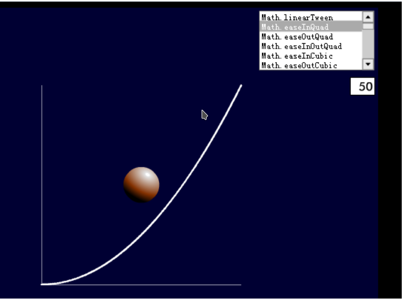

这边我就直接放一个标准的Dotween动画的使用demo吧。
这个案例满足应该可以完成你所想实现的几乎所有复杂动画。
void PlayTween()
{
//set tween data
float testOneTime = 1.0f;
float testTwoTime = 1.0f;
float delayTime = 1.0f;
Vector3 firstTargetPos = Vector3.one;
Vector3 secondTargetPos = Vector3.forward;
TweenCallback completeCallBack = DoEndThing;
TweenCallback oneCallBack = DoOneThing;
// play
Sequence se = DOTween.Sequence();
se.Append(mThing.transform.DOMove(Vector3.zero, testOneTime).SetEase(Ease.InOutBounce)); //增加一段动画 se.Append(mThing.transform.DOMove(Vector3.one, testTwoTime));
se.Join(mThing.transform.DOMove(Vector3.forward, testOneTime));//插入一段动画
se.AppendInterval(delayTime);//等待一段时间
se.AppendCallback(oneCallBack);//执行回调 I
se.Append(mThing.transform.DOMove(Vector3.one, testTwoTime));//再增加一段动画
//II :se.AppendCallback(()=> Debug.Log("this is tween callback")); 这是另外一种回调的写法，匿名方法的形式，就是所谓的lamdon表达式写法，具体自己去看看吧
//适用于一句话的回调这样写
//III:se.AppendCallback(()=> { Debug.Log("this is tween callback"); });这也是另外一种写法，适用于多段回调写法，
//总的来说我都不建议这样写，我建议我上述没有注释的写法。当然如果是一段话的回调，则采取II写法，不建议使用III的写法
se.OnComplete(completeCallBack); //整个动画完成之后的回调 se.Play();
}
void DoOneThing()
{
Debug.Log("this is one thing to need do");
}
void DoEndThing()
{
Debug.Log("Do end call backthing");
}
我们会看到 se.Append(mThing.transform.DOMove(Vector3.zero, testOneTime).SetEase(Ease.InOutBounce)); //增加一段动画
这句是很经典的一段动画的设置。
这边额外解释一下SetEase方法，设置不同的动画播放曲线。（是先特别快，然后特别慢，还是先特别慢，然后特别快的设置）
有些同学可能不了解这个动画曲线啥意思，看英文也不太方便。直接看图，直观。

当然，有这个图，但是如果这些曲线还是满足不了我的话，怎么办。
DoTween 有自定义曲线。
[SerializeField]
AnimationCurve selfSetTweenLine;

点击图中线条，即可进入自定义编辑。
Append/Join 的区别
Append 是增加，就是之前的动画都播放完之后再播放。
Join 是加入，即现在当然虽然有播放的动画，但是这个动画不用等，直接也开始大家一起播放。
Play/PlayForward/PlayBackwards SetAutoKill 理解
play 默认是SetAutoKill (true)
而如果你用playforward 则必须使用SetAutoKill (false)，因为你需要再次开启，而Dotween默认SetAutoKill (true)，所以必须记得设置。
如下:
Sequence se;
// Use this for initialization
void Start () {
SetTween();
}
void SetTween()
{
float testOneTime = 1.0f;
se = DOTween.Sequence();
se.Append(this.transform.DOMove(Vector3.zero * 100, testOneTime).SetEase(Ease.InOutBounce)); //增加一段动画
se.SetAutoKill(false);
se.Pause();
}
private void Update()
{
if(Input.GetKeyDown(KeyCode.Q))
{
se.PlayForward();
}
else if(Input.GetKeyDown(KeyCode.W))
{
se.PlayBackwards();
}
}
图中，你可以尝试改变SetAutoKill为true，则只会执行一遍动画，之后的PlayBackwards不会再执行，直接被销毁了。
Restart使用 循环重复播放某种动画实现
[SerializeField]
Image image;
Sequence imageSequence;
// Use this for initialization
void Start()
{
imageSequence = DOTween.Sequence();
imageSequence.Append(image.transform.DOScale(1.2f,5f));
imageSequence.AppendCallback(() => image.transform.localScale = Vector2.one);
imageSequence.SetAutoKill(false);
imageSequence.Pause();
}
// Update is called once per frame
void Update () {
if(Input.GetKeyDown(KeyCode.Q))
{
imageSequence.Restart();
}
}
这是一个让一个图片缩放动画，受控制，只用一个Play实现。一定要 用Restart。
补充：
DotweenPath 使用方式。参考链接：http://www.bubuko.com/infodetail-2245478.html
注意：编辑 增加一个path的方法，还需要在Scene中鼠标点击+SHITFT+CTRL。 还有哈，在编译模式下，用代码指定tweenPath好像是不行的。所以，推出下面 DoPath的用法。
Tween tween = ShortcutExtension.DoPath(this.tranform,wayPoints,3,PathType.CatmulRoom)
tween.Play();
最后：DoTween基本的主要知识点就是这些了，没啥东西了，主要核心东西都讲完了。Over